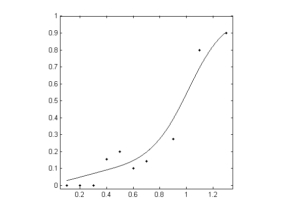

Model-free estimation of a psychometric function |
|
|---|---|
| Home | Downloads | Demonstration | Documentation | Examples | Functions | Contacts |
|---|
Data were taken from a frequency-of-seeing experiment. A flash of light of variable intensity was presented repeatedly at a fixed location in the visual field of a subject who reported whether the flash was visible.
In this demonstration, a psychometric function is fitted to the data, a threshold for 50% seeing is estimated, and the corresponding slope of the function is also estimated.
After downloading and installing the MatLab package (here), execute the following code to load the data.
clear, load examples/01_Miranda;Alternatively, data can be loaded from a text file. This text file must have the structure as described in the Documentation
[ x, r, m ] = textread( 'examples/01_Miranda.txt' );The loaded MatLab data consist of three columns, the stimulus level
x, the number of successesr, and the number of trialsm. In this example
xrm0.1030.2030.3050.42130.52100.62200.72140.93111.1451.31820An important part of local linear fitting is the choice of bandwidth
bwd. This is done here automatically using the following code, which delivers three estimates. Only the last one is used. If you want to exercise more choice, then go to bandwidth selection.
bwd_min = min( diff( x ) );
bwd_max = max( x ) - min( x );
bwd = bandwidth_cross_validation( r, m, x, [ bwd_min, bwd_max ] );
bwd = bwd(3); % choose the third estimate based on cross-validated devianceNext define the set of x-values
xfitfor the psychometric function (in fact, they can be the same as the x-values for the data set) and the estimated valuespfitat those x-values.
numxfit = 999; % Number of points to be generated minus 1
xfit = [min( x ):(max(x)-min(x))/numxfit:max( x )]'; % Values of x at which to estimate the psychometric function
pfit = locglmfit( xfit, r, m, x, bwd );Finally, get the threshold and slope (and their standard deviations) at the criterion 50%-seeing level of
p = 0.5, and make a plot.
prob = 0.5; % probability where to estimate the threshold and slope
[ threshold, slope ] = threshold_slope( pfit, xfit, prob );
niter = 200; % Number of bootstrap iterations
sd_th = bootstrap_sd_th( prob, r, m, x, niter, bwd ); % Be patient, slow process
sd_sl = bootstrap_sd_sl( prob, r, m, x, niter, bwd ); % Be patient, slow process
figure; plot( x, r ./ m, 'k.'); axis([0.05 1.35 -0.02 1]); axis square;
hold on, plot( xfit, pfit, 'k' )The results delivered by MatLab should be as follows. Note that the estimated standard deviations (sd) will vary a little from evaluation to evaluation.

threshold (sd) =0.9745 (0.0558)slope (sd) =1.5536 (0.2941)The complete example for frequency of seeing is given in example01.
To look at other examples, click here, all taken from Żychaluk K. & Foster, D. H. (2009). Download PDF.
To learn more about how the package works, go to Documentation.
To get a complete list of functions used in this package, go to Functions.
To get a brief description of nonparametric fitting, goto Documentation.
To get source publications and contact details of the authors, go to Contacts.